IBM Blockchain Platform v2.5.0 Lab Part 1 - Create a Blockchain Network¶
Section 1: Create a Blockchain Network lab overview¶
You will use the IBM Blockchain Platform console in this lab to create a blockchain network. The network will consist of three organizations. Two of these organizations will represent organizations that want to participate in the blockchain network and submit transactions. They will be referred to as peer organizations throughout the lab. The third organization is the organization that provides the ordering service.
First you will create one peer organization. Then you will create an ordering service organization, create a channel and add your first peer organization to the channel. Then you will create a second peer organization, and add it to the channel.
Each high-level task is detailed in a separate section, with multiple steps per task.
The diagram below provides a view of what your blockchain network will look like upon completion of the lab:

Important
You will be assigned a two-digit team ID by your instructor, and everywhere in this lab where you see Teamxx ** in the instructions, you must substitute xx with the two-digit id you have been assigned. Look for your two-digit id (and your IBM Blockchain Platform Console URL for Step 2.1) here.
The sections in this lab are as follows:
- Section 1: This overview
- Section 2: Logging in to the IBM Blockchain Platform console
- Section 3: Creating a Certificate Authority for your first peer organization, "Teamxx Org1"
- Section 4: Adding new users using your Teamxx Org1 Certificate Authority
- Section 5: Creating an MSP for your Teamxx Org1 organization
- Section 6: Creating a peer node for your Teamxx Org1 organization
- Section 7: Creating a Certificate Authority for an Ordering Service organization
- Section 8: Adding new users using your Ordering Service Certificate Authority
- Section 9: Creating an MSP for your Ordering Service organization
- Section 10: Creating an ordering service node for your Ordering Service organization
- Section 11: Adding your Teamxx Org1 organization to a consortium
- Section 12: Creating a channel
- Section 13: Joining your Teamxx Org1 peer to the channel
- Section 14: Creating a Certificate Authority for your second peer organization, "Teamxx Org2"
- Section 15: Adding new users using your Teamxx Org2 Certificate Authority
- Section 16: Creating an MSP for your Teamxx Org2 organization
- Section 17: Creating a peer node for your Teamxx Org2 organization
- Section 18: Adding your Teamxx Org2 organization to the consortium
- Section 19: Adding your Teamxx Org2 organization to the channel
- Section 20: Joining your Teamxx Org2 peer to the channel
Section 2: Log in to the IBM Blockchain Platform console¶
Important
The lab environment is using self-signed SSL certificates and your browser will not trust them without explicit action on your part so part of this initial section on logging in involves establishing this trust. You will first need to go to the URL address provided by your instructor.
Step 2.1: Open a new tab in your Firefox browser window and enter the unique URL for your IBM Blockchain Platform console. This URL will be provided to you by your instructor.
Note
Your URL will be similar to https://workshop-00-ibp-console-console.apps.atsocpd3.dmz:443, but this is just an example, so make sure you use the actual URL given to you by your instructor!
If you see a security warning after entering the URL, click the Advanced button, which is highlighted in the below screen snippet:
Step 2.2: The reason you are seeing these security messages is because of a self-signed certificate in our lab environment. Go ahead and click on the Accept the Risk and Continue button that is shown below:

Step 2.3: Enter your team's userid and password, which will have been provided to you by the instructor, and click the Login button:
Step 2.4: You may be presented with a screen asking you to change your password. If not, skip ahead to Step 2.5. If so, enter your current password, and then a new password twice. Click the Change password button, which will turn blue and be enabled once you have entered matching values in the New password and the Confirm new password fields. Your new password must be at least eight characters in length. Upon successful password change, you will be presented with the Login screen again, as in Step 2.3. Log in again with your new password.

Step 2.5: You may be presented with a welcome screen with some informative interactive graphics. Move your cursor around a bit to see them, and then click the Let's get started button in the lower right corner.

Note
If you do not see this welcome screen with the graphics, you can view it at any time by clicking the Get started link at the top of your screen, and then clicking the Understand box on the left.
Section 3: Create a Certificate Authority for your first peer organization, "Teamxx Org1"¶
In a Hyperledger Fabric network, each organization will typically have their own certificate authority. The certificate authority is used to issue identities- consisting of X.509 public certificates and matching private keys- for end users, client applications, administrators, and peer and ordering service nodes. In most use cases each organization will want to have control over the identities they issue, so the typical practice is that each organization provides their own certificate authority. We will follow that practice in this lab.
You are starting with a blank slate, and our first component to add is the certificate authority for our first peer organization. In relation to the diagram in the overview section that showed our finished network upon successful lab completion, here is the component that will be added in this section:

Step 3.1: You will be on a screen which lets you define three types of nodes- Peers, Certificate Authorities, and Ordering services. Click the blue Add Certificate Authority button:
Information
This will be transparent to you as a user of the IBM Blockchain Platform Console, but each individual node that you create during the lab will result in the creation of a Kubernetes pod, which is a collection of one or more containers, on a worker node in a Red Hat OpenShift Container Platform cluster.
Step 3.2: Click Create a Certificate Authority and then click the blue Next button:

Step 3.3: Fill in the Step 2 of 3 screen as follows, and then click the blue Next button:
| Field label | Value | Comments |
|---|---|---|
| CA display name | Teamxx Org1 CA | Substitute your two-digit team ID for xx |
| CA administrator enroll ID | admin | |
| CA administrator enroll secret | adminpw |

Important
Leave the checkboxes in the Advanced deployment options section unchecked. You may click on the small information icon to the right of each choice if you would like to learn about each option, but you do not need to do so to successfully complete the lab. This advice is applicable for all steps throughout this lab that offer advanced deployment option choices.
Step 3.4: Review your settings on the Step 3 of 3 screen and click the Add Certificate Authority button:
Note
Throughout this lab, when passwords are entered, you can click the icon that looks like an eye to see the password you have entered. It is recommended that you do this for the lab to ensure you have entered the intended password. The screenshots shown in this lab will show the passwords that you should enter.

Step 3.5: You will see a tile for your new certificate authority. Observe the box in the upper right corner of the tile. If it is gray, and you hover your cursor over it, you may see a message indicating that the status is pending. In about a minute, the box in the upper right should turn green, indicating that the certificate authority is running.
Note
If the box in the upper right corner of the tile does not turn green in a minute or two, try reloading the page in your browser. Contact an instructor for help if it does not turn green and show the running status when you hover your cursor over this box.
Once your certificate authority is running, click on its tile so that you can proceed to the next section where you will add users.

Section 4: Add new users using your Teamxx Org1 Certificate Authority¶
Step 4.1: You must first associate an administrative identity with your certificate authority, so click the Associate identity button as shown in this screen snippet:
Step 4.2: Ensure that the Enroll ID Button is selected in the Associate Identity sidebar panel, fill out the panel as directed in the below table, and then click the blue Associate Identity button:
| Field label | Value | Comments |
|---|---|---|
| Enroll ID | admin | |
| Enroll secret | adminpw | click the "eye" icon to see the password |
| Identity display name | Teamxx Org1 CA Admin | substitute your two-digit team ID for xx |
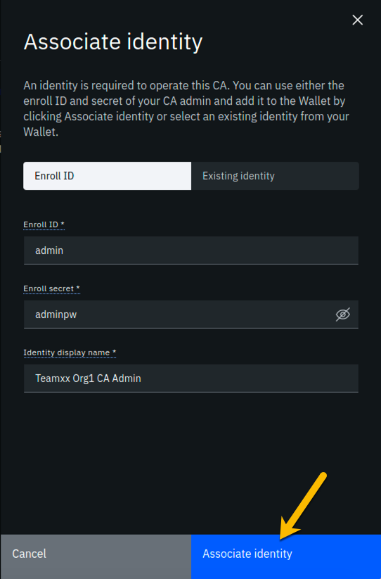
Step 4.3: You should now see the admin userid in the list of registered users. This userid is intended to be used by a person acting as the registrar of this Certificate Authority. Next you will create a userid for use by a person who will be the blockchain network administrator for the organization. Click the Register user button on the right side of the screen:
Step 4.4: In the Step 1 of 2 panel, fill it out as guided by the following table, and then click the blue Next button:
Important
It is critical that you change the value of the Type field from client to admin for this userid!
| Field label | Value | Comments |
|---|---|---|
| Enroll ID | org1admin | |
| Enroll secret | org1adminpw | click the "eye" icon to see the password |
| Type | admin | Choose from dropdown list |

Step 4.5: We will not be using custom attributes in this lab, so all you have to do on this screen is click the Register user button:

Step 4.6: You should now see the userid you just registered, org1admin, listed on the screen. You also need to create a userid that your peer node will operate as, so click the Register user button again:

Step 4.7: In the Step 1 of 2 panel, fill it out as guided by the following table, and then click the blue Next button:
Important
It is critical that you change the value of the Type field from client to peer for this userid!
| Field label | Value | Comments |
|---|---|---|
| Enroll ID | peer1 | |
| Enroll secret | peer1pw | click the "eye" icon to see the password |
| Type | peer | Choose from dropdown list |

Step 4.8: Just click the Register user button at the bottom of the screen:
Step 4.9: You should now see the peer1 userid listed along with the others on this screen. Click the Organizations icon on the palette on the left of your screen and continue to the next section of the lab:

Section 5: Create an MSP for your organization¶
The Membership Service Provider (MSP) component is integral to the private and permissioned Hyperledger Fabric as it provides the authentication- "who are you?"- and authorization - "ok, we believe you are whom you say you are, but are you permitted to do what you are asking to do?"- services. The infrastructure that the MSP needs to do its job must be in place before you create your peer node. This step will create this for your "Teamxx Org1" organization.
As we add components throughout the lab, the diagram that maps to our final goal will be shown, with the new component to be added in any given section annotated with a bright red star, as in the below diagram which shows that we will be adding your Teamxx Org1's MSP:

Step 5.1: You should see a screen that looks like below, indicating that you have yet to create a Membership Service Provider (MSP) definition for your organization. Click the Create MSP definition button:
Step 5.2: Enter the following values as instructed here on the MSP definition details screen and click the Next button:
| Field label | Value | Comments |
|---|---|---|
| MSP display name | Teamxx Org1 MSP | substitute your two-digit team ID for xx |
| MSP ID | teamxxorg1msp | substitute your two-digit team ID for xx |

Step 5.3: On the Root Certificate Authority details screen, select Teamxx Org1 CA from the dropdown list. Once you have selected the root certificate authority, you will see that the Root certificates and TLS root certificates fields appear and are populated with apparent nonsense that is actually base64-encoded X.509 certificates.
Click the Next button:
Step 5.4: On the Admin certificates screen, fill out the three fields beneath this in accordance with the below table, and then click the Generate button, which should become active once you enter values for the three fields:
| Field label | Value | Comments |
|---|---|---|
| Enroll ID | org1admin | Select from dropdown list. It will not be the default presented to you, so make sure you select it. |
| Enroll secret | org1adminpw | |
| Identity name | Teamxx Org1 MSP Admin | substitute your team ID for xx |

Step 5.5: The prior step generated a public certificate and a matching private key. This private key is stored by the IBM Blockchain Platform console in your local browser storage and nowhere else. In order to ensure that you can retrieve your private key later, you must now click the Export button which will prompt you to save your private key (along with the public certificate) in a JSON file on your hard drive.

Step 5.6: Select the Save File radio button in the dialog window that appears, and click the OK button:
Step 5.7: Save the exported JSON file in a location that you can remember. The sample screenshot below shows it being saved to a folder named Downloads.
Note
If you are not prompted for a location in which to save the file, it is probably because your browser settings automatically download files to your $HOME/Downloads directory, which is fine. This advice holds true for any time in the lab when you are asked to save a file.
Note
You probably won't need this saved file for this lab if you use the same browser window for the duration of the lab, but the saved file may be necessary if, for whatever reason, you do have to use a new browser window or session, so go ahead and save it!

Step 5.8: Now that you have saved the exported certificate, click the blue Next button to proceed:
Step 5.9: On the Review MSP information screen, ensure that the values you entered match what is shown in the following table, taking into account that xx should be your two-digit team ID:
| Left column (labels) | Right column (values your provided) |
|---|---|
| MSP display name | Teamxx Org1 MSP |
| MSP ID | teamxxorg1msp |
| Admin certificate | Teamxx Org1 MSP Admin |
| Selected CA | Teamxx Org1 CA |
Note
If you entered some values incorrectly, click the Back button as necessary to navigate back through the screen flow until you get to the screen(s) necessary to correct your mistakes, and then navigate forward again with the Next button until you return to this Review MSP information screen and verify you have entered the expected values. Ask an instructor for help if necessary.
When you have ensured that you have entered the right values, click the blue Create MSP definition button in the lower right of your screen:

Step 5.10: You should now see the definition for your new MSP listed on your screen. Click the Nodes icon in the icon palette on your left- it is the topmost icon on this palette- and you will be ready to proceed to the next section:

Section 6: Create a peer node for your Teamxx Org1 organization¶
A peer node is where smart contracts- in essence, your blockchain business transactions- run. Peer nodes also store the ledgers. We will create a peer for your Teamxx Org1 in this section and our fledgling network will then look like this:

Step 6.1: Click the Add peer button:

Step 6.2: Click the Create a peer button and then click the blue Next button:

Step 6.3: Leave all of the Advanced deployment options unchecked. Type Teamxx Org1 Peer, where xx is your two-digit team ID, in the Peer display name field and then click the blue Next button:

Step 6.4: Enter or select the following values on the Step 3 of 5 panel as directed by the following table, and then click the blue Next button:
| Field label | Value | Comments |
|---|---|---|
| Certificate Authority | Teamxx Org1 CA | Select from dropdown list if this choice is not already presented to you, where xx is your two-digit team ID |
| Peer enroll ID | peer1 | Select from dropdown list |
| Peer enroll secret | peer1pw | |
| Organization MSP | Teamxx Org1 MSP | Select from dropdown list, where xx is your two-digit team ID |
| Fabric version | 1.4.7-2 | Select from dropdown list |
| TLS CSR hostname | leave blank |
Step 6.5: On the Associate Identity screen, select Teamxx Org1 MSP Admin, where xx is your two-digit team ID, for the Peer administrator identity field, and click Next:

Step 6.6: The Summary panel provides a review of the values you entered or selected in the prior panels. You may need to scroll down to see all of the values. The values you entered should match up with the table below. If not, use the Back button as necessary to correct your entries. The table below shows the expected value (where xx is your two-digit team ID) and which of the five panels in the Add Peer flow was used to set this value:
| Field label | Expected Value | Comments |
|---|---|---|
| Peer display name | Teamxx Org1 Peer | Set in Step 2 of 5 panel |
| State database | CouchDB | Not set by you- default value |
| Certificate Authority | Teamxx Org1 CA | Set in Step 3 of 5 panel |
| Peer enroll ID | peer1 | Set in Step 3 of 5 panel |
| Peer enroll secret | peer1pw | Set in Step 3 of 5 panel |
| Organization MSP | Teamxx Org1 MSP | Set in Step 3 of 5 panel |
| Version | 1.4.7-2 | Set in Step 3 of 5 panel |
| CPU (VPC) usage total | 1.6 | Not set by you- calculated from defaults |
| Memory usage total | 2,800M | Not set by you- calculated from defaults |
| Storage usage total | 200Gi | Not set by you- calculated from defaults |
| Associated identity | Teamxx Org1 MSP Admin | Set in Step 4 of 5 panel |
Note
If you have to use the Back button to make any corrections, you can return to the summary on Step 5 of 5 by clicking Next the necessary number of times.
When you have ensured that you have entered the right values, click the blue Add peer button in the lower right of your screen:
Step 6.7: Similarly to when you created the certificate authority earlier, you should see your new peer listed, along with a gray box in the upper right of its tile, showing that the status of this peer is "pending" if you hover your cursor over the gray box. It can take a minute or two on our lab system for the peer to come up completely, and you may need to refresh your browser in order to see the box turn green. If your peer is still not ready after a couple of minutes and after you have tried refreshing your browser, ask an instructor for help. The peer must be ready, as indicated by a green box in the upper right of the peer's tile, similar to what is shown below, before you can continue:

Section 7: Create a Certificate Authority for an Ordering Service organization¶
In this lab you will create three organizations- two organizations will run peer nodes and run smart contracts. One of the organizations will provide the ordering service for the blockchain network. In the real world each of the three organizations would likely use their own instance of the IBM Blockchain Platform console to create their necessary artifacts. (You have already done much of this for the first peer organization, Teamxx Org1, in the previous sections of this lab).
Note
You will carry out activities for all three organizations from your browser for purposes of this lab. This will somewhat simplify the steps you'll need to perform versus the real-world scenario where this activity is being carried out separately by each organization. The procedure to perform the tasks in the "real world" case are outlined in the IBM Blockchain Platform documentation- basically, it involves exporting information about your organization into JSON files, and providing this information "out-of-band" to the other organizations.
In an earlier step you exported your generated certificate and its private key. While it is a JSON file, this is not a file you would ever send to another organization, as it contains your private key which should never be shared with other organizations. The exported JSON files that are used for inter-organizational tasks contain only public information which is safe to share.
Our network will look like this at the completion of this section:

Step 7.1: Click the Add Certificate Authority button:
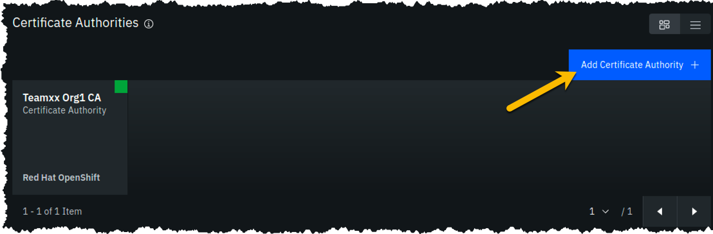
Step 7.2: Click Create a Certificate Authority and then click the blue Next button:
Note
The steps in this section are essentially the same as in Section 3, just with different values being entered as appropriate.
Step 7.3: Fill in the Step 2 of 3 screen as follows, and then click the blue Next button:
| Field label | Value | Comments |
|---|---|---|
| CA display name | Teamxx Ordering Service CA | Substitute your two-digit team ID for xx |
| CA administrator enroll ID | admin | |
| CA administrator enroll secret | adminpw |

Step 7.4: Review your settings and click the Add Certificate Authority button:
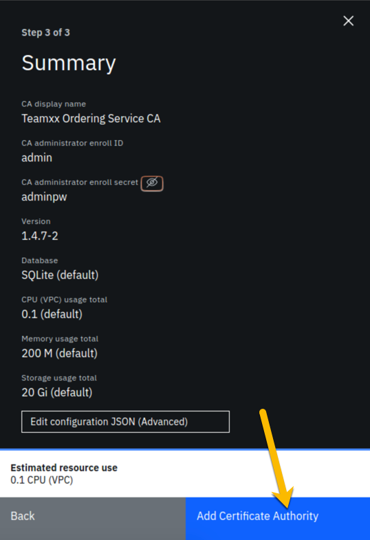
Step 7.5: You will see a tile for your new certificate authority. Observe the box in the upper right corner of the tile. If it is gray, and you hover your cursor over it, you may see a message indicating that the status is pending. In about a minute, the box in the upper right should turn green, indicating that the certificate authority is running.
Note
If the box in the upper right corner of the tile does not turn green in a minute or two, try reloading the page in your browser. Contact an instructor for help if it does not turn green and show the running status when you hover your cursor over this box.
Once your Ordering Service certificate authority is running, click on its tile so that you can proceed to the next section where you will add users.

Section 8: Add new users using your Ordering Service Certificate Authority¶
Step 8.1: You must first associate an administrative identity with your certificate authority, so click the Associate identity button as shown in this screen snippet:
Step 8.2: Ensure that the Enroll ID Button is selected in the Associate Identity sidebar panel, fill out the panel as directed in the below table, and then click the blue Associate Identity button:
| Field label | Value | Comments |
|---|---|---|
| Enroll ID | admin | |
| Enroll secret | adminpw | click the "eye" icon to see the password |
| Identity display name | Teamxx Ordering Service CA Admin | substitute your two-digit team ID for xx |

Step 8.3: You should now see the admin userid in the list of registered users. This userid is intended to be used by a person acting as the registrar of this Certificate Authority. Next you will create a userid for use by a person who will be the blockchain network administrator for the organization. Click the Register user button on the right side of the screen:
Step 8.4: In the Step 1 of 2 panel, fill it out as guided by the following table, and then click the blue Next button:
Important
It is critical that you change the value of the Type field from client to admin for this userid!
| Field label | Value | Comments |
|---|---|---|
| Enroll ID | osadmin | |
| Enroll secret | osadminpw | click the "eye" icon to see the password |
| Type | admin | Choose from dropdown list |
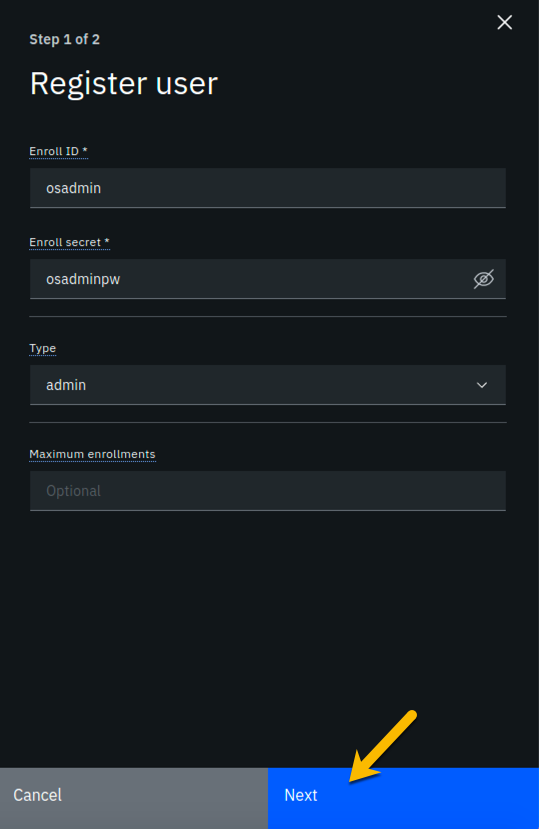
Step 8.5: We will not be using custom attributes in this lab, so all you have to do on this screen is click the Register user button:
Step 8.6: You should now see the userid you just registered, osadmin, listed on the screen. You also need to create a userid that your ordering service node will operate as, so click the Register user button again:

Step 8.7: In the Step 1 of 2 panel, fill it out as guided by the following table, and then click the blue Next button:
Important
It is critical that you change the value of the Type field from client to orderer for this userid!
| Field label | Value | Comments |
|---|---|---|
| Enroll ID | os1 | |
| Enroll secret | os1pw | click the "eye" icon to see the password |
| Type | orderer | Choose from dropdown list |
Step 8.8: Just click the Register user button at the bottom of the screen:
Step 8.9: You should now see the os1 userid listed along with the others on this screen. Click the Organizations icon on the palette on the left of your screen and continue to the next section of the lab:

Section 9: Create an MSP for your Ordering Service organization¶
Our trusty lodestar shows us what will be added to our nascent network now:

Step 9.1: You should see a screen that looks like below. You now need to create an MSP definition for your Ordering Service organization, just as you did earlier for your peer (Teamxx Org1 MSP) organization. Click the Create MSP definition button to get started:

Step 9.2: Enter the following values as instructed here on the MSP definition details screen and click the Next button:
| Field label | Value | Comments |
|---|---|---|
| MSP display name | Teamxx Ordering Service MSP | substitute your two-digit team ID for xx |
| MSP ID | teamxxosmsp | substitute your two-digit team ID for xx |
The sidebar panel contains more information than will likely fit in your browser window, so review the values you have entered per the above list, and then scroll down within the sidebar panel:
Step 9.3: On the Root Certificate Authority details screen, select Teamxx Ordering Service CA from the dropdown list. Once you have selected the root certificate authority, you will see that the Root certificates and TLS root certificates fields appear and are populated with apparent nonsense that is actually base64-encoded X.509 certificates.
Click the Next button:
Step 9.4: On the Admin certificates screen, fill out the three fields beneath this in accordance with the below table, and then click the Generate button, which should become active once you enter values for the three fields:
| Field label | Value | Comments |
|---|---|---|
| Enroll ID | osadmin | Select from dropdown list. It will not be the default presented to you, so make sure you select it. |
| Enroll secret | osadminpw | |
| Identity name | Teamxx Ordering Service MSP Admin | substitute your team ID for xx |

Step 9.5: The prior step generated a public certificate and a matching private key. This private key is stored by the IBM Blockchain Platform console in your local browser storage and nowhere else. In order to ensure that you can retrieve your private key later, you must now click the Export button which will prompt you to save your private key (along with the public certificate) in a JSON file on your hard drive.

Step 9.6: Select the Save File radio button in the dialog window that appears, and click the OK button:

Step 9.7: Save the exported JSON file in a location that you can remember. The sample screenshot below shows it being saved to a folder named Downloads.
Note
You probably won't need this saved file for this lab if you use the same browser window for the duration of the lab, but the saved file may be necessary if, for whatever reason, you do have to use a new browser window or session, so go ahead and save it!

Step 9.8: Now that you have saved the exported certificate, click the blue Next button to proceed:

Step 9.9: On the Review MSP information screen, ensure that the values you entered match what is shown in the following table, taking into account that xx should be your two-digit team ID:
| Left column (labels) | Right column (values your provided) |
|---|---|
| MSP display name | Teamxx Ordering Service MSP |
| MSP ID | teamxxosmsp |
| Admin certificate | Teamxx Ordering Service MSP Admin |
| Selected CA | Teamxx Ordering Service CA |
Note
If you entered some values incorrectly, click the Back button as necessary to navigate back through the screen flow until you get to the screen(s) necessary to correct your mistakes, and then navigate forward again with the Next button until you return to this Review MSP information screen and verify you have entered the expected values. Ask an instructor for help if necessary.
When you have ensured that you have entered the right values, click the blue Create MSP definition button in the lower right of your screen:
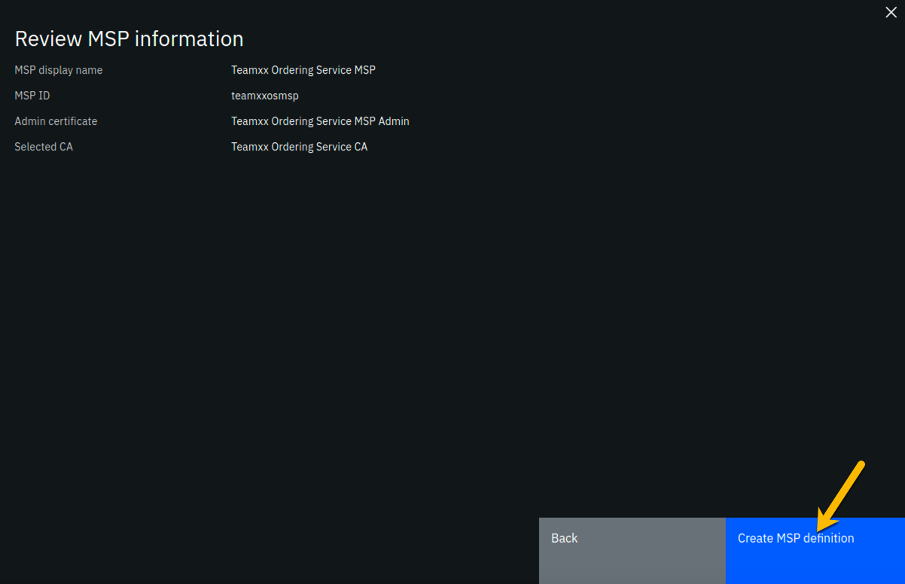
Step 9.10: You should now see the definition for your new MSP listed on your screen. Click the Nodes icon in the icon palette on your left- it is the topmost icon on this palette, and you will be ready to proceed to the next section:
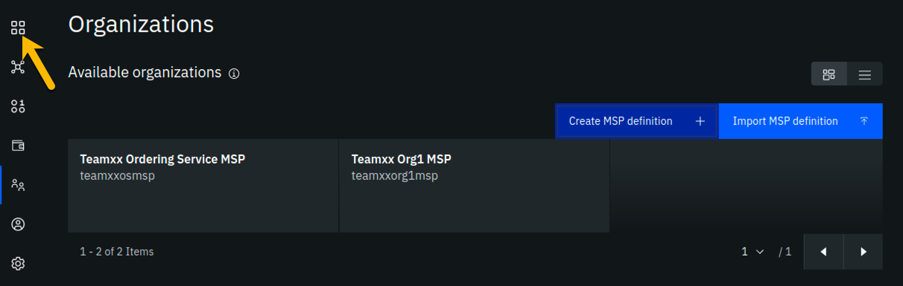
Section 10: Create an ordering service node for your Ordering Service organization¶
Having created the MSP, you may now create the ordering service node. Ordering service nodes receive proposed transactions from peer nodes, package them into blocks, and then deliver these blocks to peer nodes to commit to the ledger. Ordering service nodes are pretty important, in other words.
Our star is running out of leg room all cramped up by the circle in our drawing but hopefully you can see what she is trying to highlight in this iteration of our journey:

Step 10.1: Click the Add ordering service button:
Step 10.2: Click the Create an Ordering service button and then click the blue Next button:

Step 10.3: Type Teamxx Ordering Service, where xx is your two-digit team ID, in the Ordering service display name field, leave the Number of ordering nodes field set to One ordering node, and then click the blue Next button:

Step 10.4: Enter or select the following values on the Step 3 of 5 panel using the following table as a guide, and then click the blue Next button:
| Field label | Value | Comments |
|---|---|---|
| Certificate Authority | Teamxx Ordering Service CA | Select from dropdown list if this choice is not already presented to you, where xx is your two-digit team ID |
| Ordering service enroll ID | os1 | Select from dropdown list. It will not be the default presented to you, so make sure you select it. |
| Ordering service enroll secret | os1pw | |
| Organization MSP | Teamxx Ordering Service MSP | Select from dropdown list, where xx is your two-digit team ID |
| Fabric version | 1.4.7-2 | Select from dropdown list |

Step 10.5: On the Associate Identity screen, select Teamxx Ordering Service MSP Admin, where xx is your two-digit team ID, for the Orderer administrator identity field, and click Next:

Step 10.6: The Summary panel provides a review of the values you entered or selected in the prior panels. You may need to scroll down to see all of the values. The values you entered should match up with the table below. If not, use the Back button as necessary to correct your entries. The table below shows the expected value (where xx is your two-digit team ID) and which of the five panels in the Add ordering service flow was used to set this value:
| Field label | Expected Value | Comments |
|---|---|---|
| Ordering service display name | Teamxx Ordering Service | Set in Step 2 of 5 panel |
| Number of ordering nodes | 1 | Default value from Step 2 of 5 panel |
| Certificate Authority | Teamxx Ordering Service CA | Set in Step 3 of 5 panel |
| Ordering service enroll ID | os1 | Set in Step 3 of 5 panel |
| Ordering service enroll secret | os1pw | Set in Step 3 of 5 panel |
| Organization MSP | Teamxx Ordering Service MSP | Set in Step 3 of 5 panel |
| Version | 1.4.7-2 | Set in Step 3 of 5 panel |
| CPU (VPC) usage total | 0.35 | Not set by you- calculated from defaults |
| Memory usage total | 700 M | Not set by you- calculated from defaults |
| Storage usage total | 100 Gi | Not set by you- default value |
| Associated identity | Teamxx Ordering Service MSP Admin | Set in Step 4 of 5 panel |
Note
If you have to use the Back button to make any corrections, you can return to the summary on Step 5 of 5 by clicking Next the necessary number of times.
When you have ensured that you have entered the right values, click the blue Add ordering service button in the lower right of your screen:
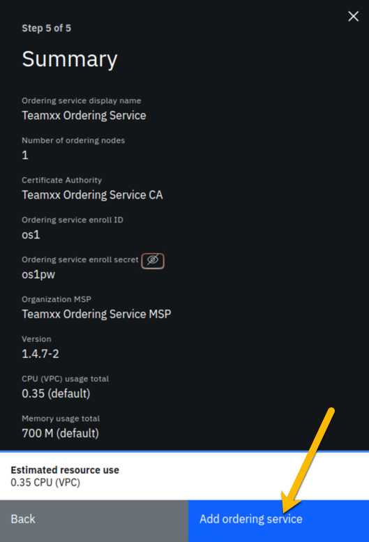
Step 10.7: You should see your new ordering service listed, along with a gray box in the upper right of its tile, showing that the status of this ordering service is "pending" if you hover your cursor over the gray box. It can take a minute or two on our lab system for the ordering service to come up completely, and you may need to refresh your browser in order to see the box turn green. If your ordering service is still not ready after a couple of minutes and after you have tried refreshing your browser, ask an instructor for help. The ordering service must be ready, as indicated by a green box in the upper right of its tile, similar to what is shown below, before you can continue.
Caution
This step pertains to the tile listed in the Ordering services section, not to the similarly named tile in the Certificate Authorities section
Once it is ready, click on its tile and continue to the next section of the lab.

Section 11: Add your Teamxx Org1 organization to a consortium¶
Step 11.1: In the Consortium members section, which is below the Ordering service administrators section, click the Add organization button:
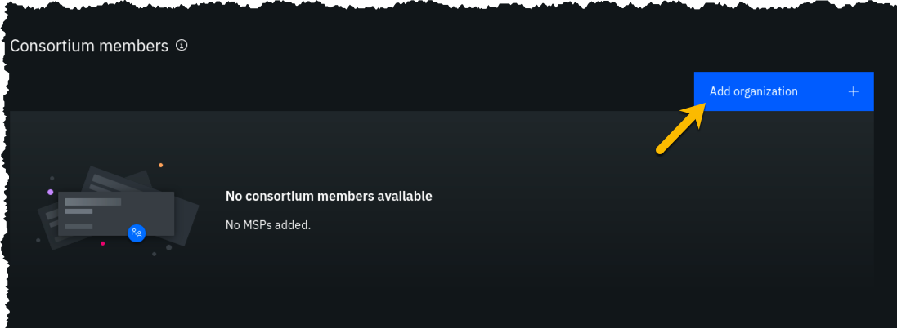
Step 11.2: Click the Existing MSP ID button, select Teamxx Org1 MSP (teamxxorg1msp) where xx is your two-digit team ID, and then click the Add organization button:
Important
Ensure that you select Teamxx Org1 MSP (teamxxorg1msp) from the dropdown list. This will probably not be the default choice provided to you.
Step 11.3: You should now see your peer organization, teamxxorg1msp, listed as a member of your consortium:
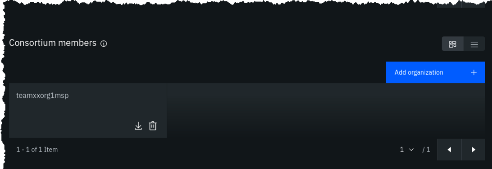
Section 12: Create a channel¶
You won't get very far without an ordering service node, because they are the animals that create blocks. You won't get very far without a peer, as peers run smart contracts, which create transactions that are sent to an ordering service node.
Well, you won't get much stuff done without a channel either, because a transaction proposal is sent from a peer to an ordering service node over a channel.
You will define a channel in this section and in its definition you will make your Teamxx Org1 peer organization a member of the channel. The actual definition of the channel is verified at the ordering service node and it keeps track of all channels. (You can define multiple channels in a Hyperledger Fabric network but for simplicity this lab will only have you define one).
The line between the ordering service node and your first peer organization node represents that our ordering service knows about our new channel and that our peer organization is a member of the new channel:

Step 12.1: Click the Channels icon in the icon palette on the left. The screenshot below shows which icon to click:

Step 12.2: Click the Create channel button:
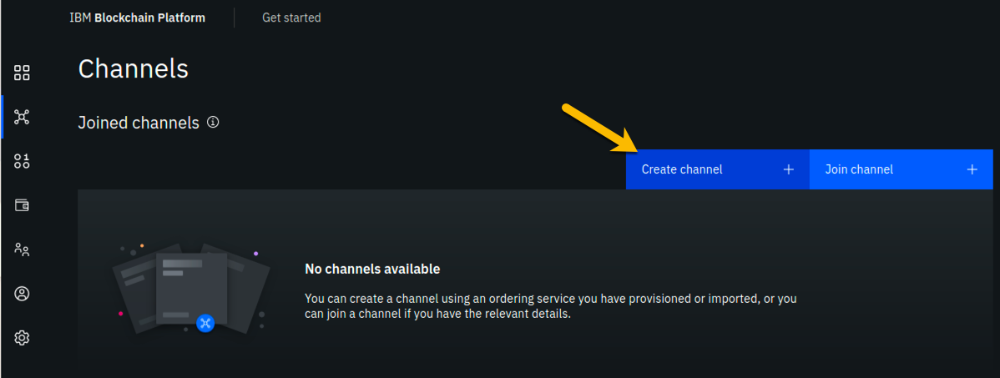
Step 12.3: You may read the information on the Prerequisites panel, but you will not have to do anything- the prior sections of the lab have met the prerequisites! Click on the blue Next button to continue:

Step 12.4: On the Channel details panel, enter teamxx-channel1 in the Channel name field, and select Teamxx Ordering Service for the Ordering service field, where xx is your two-digit team ID, then click the Next button to continue:
Step 12.5: On the Organizations panel, select Teamxx Org1 MSP (teamxxorg1msp) for the Channel member field and click the Add button to the right of your selection:
Step 12.6: You should now see teamxxorg1msp listed in the Organizations section. Select the checkbox to the left of the word Operator in order to give your organization operator privileges on the channel. The Next button should become enabled once you do this, so click on it to continue:

Step 12.7: On the Update policy panel, ensure that 1 out of 1 is selected in the Policy field and then click the Next button:
Step 12.8: On the Organization creating channel panel, select Teamxx Org1 MSP (teamxxorg1msp) from the dropdown list for the Channel creator MSP field, and select Teamxx Org1 MSP Admin from the dropdown list for the Identity field, and then click the Next button:

Step 12.9: On the Review channel information screen, ensure that the values you entered match what is shown in the following table, taking into account that xx should be your two-digit team ID:
| Left column (labels) | Right column (values your provided) |
|---|---|
| Channel name | teamxx-channel1 |
| Ordering service | Teamxx Ordering Service_1 |
| Organizations | teamxxorg1msp |
| Policy | 1 out of 1 |
| Organization creating channel | Teamxx Org1 MSP |
| Identity for organization creating channel | Teamxx Org1 MSP Admin |
Note
If you entered some values incorrectly, click the Back button as necessary to navigate back through the screen flow until you get to the screen(s) necessary to correct your mistakes, and then navigate forward again with the Next button until you return to this Review MSP information screen and verify you have entered the expected values. Ask an instructor for help if necessary.
When you have ensured that you have entered the right values, click the blue Create channel button in the lower right of your screen:

Step 12.10: You should now see your channel listed. Click where it says Pending- add peer and continue to the next section:
Section 13: Join your Teamxx Org1 peer to the channel¶
In the previous section you defined a channel, teamxxchannel1, and made your Teamxx Org1 organization a member of the channel. However, in order for a particular peer within that organization to participate in the channel, that peer has to join the channel. Our simple lab network only has one peer in the organization, but in most production implementations an organization will have multiple peers. When the peer joins a channel, it will receive all of the blocks in the channel that were created prior to the time the peer joined the channel, until it catches up.
Our evolving network diagram only gets a subtle change from this section- the line from the ordering service node to the circle representing our organization, indicating that our organization is a member of the channel, has been extended with a line segment from the circle to our peer, indicating that our peer has now joined the channel:

Step 13.1: For the Choose from available peers field, select Teamxx Org1 Peer, where xx is your two-digit team ID, and click the Join channel button in the lower right:
Note
The Join channel button will not be enabled until you click on the peer name.

Step 13.2: You should now see that instead of the Pending- add peer message at the bottom of the tile for your channel, it now says 2 Blocks. This indicates that the channel has been successfully created and you have joined a peer to it.

Information
The first block created in a channel is called the genesis block, and it contains configuration data for the channel. The second block in this channel is for a configuration transaction that defined Teamxx Org1 Peer as an anchor peer for the Teamxx Org1 organization. An anchor peer is a peer whose external endpoint address is published in the channel configuration. This way other organizations can reach this peer. An organization must provide at least one anchor peer for service discovery or private data collections to work.
Section 14: Create a Certificate Authority for your second peer organization, "Teamxx Org2"¶
You have now already defined two organizations- Teamxx Org1 and Teamxx Ordering Service. The Ordering Service organization provides the ordering service and does not itself initiate blockchain transactions. Most, if not all, realistic blockchain networks will involve multiple organizations initiating blockchain transactions. So you will now define a second peer organization to participate in the network. Your network will thus have three organizations- two peer organizations that are collaborating in the blockchain network, and the ordering service organization which is, essentially, a service provider.
You are changing hats again, this time from your Teamxx Ordering Service administrator hat to your Teamxx Org2 administrator hat. Our network diagram is coming along quite nicely:

We will define the second peer organization now. The pattern is identical to what you did earlier for the first organization.
Note
This will be the third Certificate Authority you define in this lab, so we will show fewer screenshots of repetitive tasks in this section and in subsequent sections.
Step 14.1: Click the Nodes icon on the icon palette on the left, and then click the blue Add Certificate Authority button.
Step 14.2: On the Step 1 of 3 sidebar panel, click Create a Certificate Authority and then click the blue Next button.
Step 14.3: Fill in the Step 2 of 3 sidebar panel as follows, and then click the blue Next button:
| Field label | Value | Comments |
|---|---|---|
| CA display name | Teamxx Org2 CA | Substitute your two-digit team ID for xx |
| CA administrator enroll ID | admin | |
| CA administrator enroll secret | adminpw |
Step 14.4: Review your settings on the Step 3 of 3 sidebar panel and click the Add Certificate Authority button:

Step 14.5: You will see a tile for your new certificate authority. Observe the box in the upper right corner of the tile. If it is gray, and you hover your cursor over it, you may see a message indicating that the status is pending. In about a minute, the box in the upper right should turn green, indicating that the certificate authority is running.
Note
If the box in the upper right corner of the tile does not turn green in a minute or two, try reloading the page in your browser. Contact an instructor for help if it does not turn green and show the running status when you hover your cursor over this box.
Once your certificate authority is running, click on its tile so that you can proceed to the next section where you will add users.
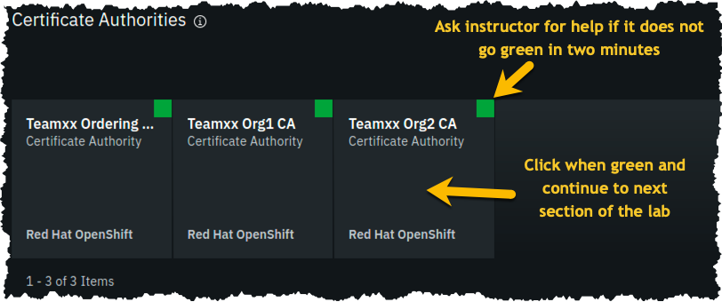
Section 15: Add new users using your Teamxx Org2 Certificate Authority¶
Step 15.1: You must first associate an administrative identity with your certificate authority, so click the Associate identity button as shown in this screen snippet:
Step 15.2: Ensure that the Enroll ID Button is selected in the Associate Identity sidebar panel, fill out the panel as directed in the below table, and then click the blue Associate Identity button:
| Field label | Value | Comments |
|---|---|---|
| Enroll ID | admin | |
| Enroll secret | adminpw | click the "eye" icon to see the password |
| Identity display name | Teamxx Org2 CA Admin | substitute your two-digit team ID for xx |
Step 15.3: You should now see the admin userid in the list of registered users. This userid is intended to be used by a person acting as the registrar of this Certificate Authority. Next you will create a userid for use by a person who will be the blockchain network administrator for the organization. Click the Register user button on the right side of the screen:
Step 15.4: In the Step 1 of 2 panel, fill it out as guided by the following table, and then click the blue Next button:
Important
It is critical that you change the value of the Type field from client to admin for this userid!
| Field label | Value | Comments |
|---|---|---|
| Enroll ID | org2admin | |
| Enroll secret | org2adminpw | click the "eye" icon to see the password |
| Type | admin | Choose from dropdown list |
Step 15.5: We will not be using custom attributes in this lab, so all you have to do on this screen is click the Register user button.
Step 15.6: You should now see the userid you just registered, org2admin, listed on the screen. You also need to create a userid that your peer node will operate as, so click the Register user button again.
Step 15.7: In the Step 1 of 2 panel, fill it out as guided by the following table, and then click the blue Next button:
Important
It is critical that you change the value of the Type field from client to peer for this userid!
| Field label | Value | Comments |
|---|---|---|
| Enroll ID | peer2 | |
| Enroll secret | peer2pw | click the "eye" icon to see the password |
| Type | peer | Choose from dropdown list |
Step 15.8: Just click the Register user button at the bottom of the screen.
Step 15.9: You should now see the peer2 userid listed along with the others on this screen. Click the Organizations icon on the palette on the left of your screen and continue to the next section of the lab:

Section 16: Create an MSP for your second peer organization¶
Defining the MSP for Teamxx Org2 will bring our network one step closer to fruition:

Step 16.1: You should see the MSP definitions for your other two organizations. Click the blue Create MSP definition button.
Step 16.2: Enter the following values as instructed here on the MSP definition details screen and click the Next button:
| Field label | Value | Comments |
|---|---|---|
| MSP display name | Teamxx Org2 MSP | substitute your two-digit team ID for xx |
| MSP ID | teamxxorg2msp | substitute your two-digit team ID for xx |
Step 16.3: On the Root Certificate Authority details screen, select Teamxx Org2 CA from the dropdown list. Once you have selected the root certificate authority, you will see that the Root certificates and TLS root certificates fields appear and are populated with apparent nonsense that is actually base64-encoded X.509 certificates.
Important
Ensure that you selected your certificate authority for your Org2, and not Org1, in the Root Certificate Authority field. It's easy to mistakenly choose Org1's certificate authority here, and this often turns ecstasy to melancholy.
Click the Next button.
Step 16.4: On the Admin certificates screen, fill out the three fields beneath this in accordance with the below table, and then click the Generate button, which should become active once you enter values for the three fields:
| Field label | Value | Comments |
|---|---|---|
| Enroll ID | org2admin | Select from dropdown list. It will not be the default presented to you, so make sure you select it. |
| Enroll secret | org2adminpw | |
| Identity name | Teamxx Org2 MSP Admin | substitute your team ID for xx |
Step 16.5: The prior step generated a public certificate and a matching private key. This private key is stored by the IBM Blockchain Platform console in your local browser storage and nowhere else. In order to ensure that you can retrieve your private key later, you must now click the Export button which will prompt you to save your private key (along with the public certificate) in a JSON file on your hard drive.
Step 16.6: Select the Save File radio button in the dialog window that appears, and click the OK button.
Step 16.7: Save the exported JSON file in a location that you can remember.
Note
You probably won't need this saved file for this lab if you use the same browser window for the duration of the lab, but the saved file may be necessary if, for whatever reason, you do have to use a new browser window or session, so go ahead and save it!
Step 16.8: Now that you have saved the exported certificate, click the blue Next button to proceed:
Step 16.9: On the Review MSP information screen, ensure that the values you entered match what is shown in the following table, taking into account that xx should be your two-digit team ID:
| Left column (labels) | Right column (values your provided) |
|---|---|
| MSP display name | Teamxx Org2 MSP |
| MSP ID | teamxxorg2msp |
| Admin certificate | Teamxx Org2 MSP Admin |
| Selected CA | Teamxx Org2 CA |
Note
If you entered some values incorrectly, click the Back button as necessary to navigate back through the screen flow until you get to the screen(s) necessary to correct your mistakes, and then navigate forward again with the Next button until you return to this Review MSP information screen and verify you have entered the expected values. Ask an instructor for help if necessary.
When you have ensured that you have entered the right values, click the blue Create MSP definition button in the lower right of your screen.
Step 16.9: You should now see the definition for your new MSP listed on your screen. Scroll up and click the Nodes icon in the icon palette on your left- it is the topmost icon on this palette- and you will be ready to proceed to the next section.
Section 17: Create a peer node for your second peer organization¶
The most useful German phrase I know is noch einmal Bier, bitte!, which translates to another beer, please! So I am asking you kindly, noch einmal peer, bitte!, that is, please define a peer for your second organization:

Step 17.1: Click the blue Add peer button.
Step 17.2: Click the Create a peer button and then click the blue Next button.
Step 17.3: Leave all of the Advanced deployment options unchecked. Type Teamxx Org2 Peer, where xx is your two-digit team ID, in the Peer display name field and then click the blue Next button.
Step 17.4: Enter or select the following values on the Step 3 of 5 panel as directed by the following table, and then click the blue Next button.
| Field label | Value | Comments |
|---|---|---|
| Certificate Authority | Teamxx Org2 CA | Select from dropdown list if this choice is not already presented to you, where xx is your two-digit team ID |
| Peer enroll ID | peer2 | Select from dropdown list |
| Peer enroll secret | peer2pw | |
| Organization MSP | Teamxx Org2 MSP | Select from dropdown list, where xx is your two-digit team ID |
| TLS CSR hostname | leave blank | |
| Fabric version | 1.4.7-2 | Select from dropdown list |
Step 17.5: On the Associate Identity screen, select Teamxx Org2 MSP Admin, where xx is your two-digit team ID, for the Peer administrator identity field, and click Next.
Step 17.6: The Summary panel provides a review of the values you entered or selected in the prior panels. You may need to scroll down to see all of the values. The values you entered should match up with the table below. If not, use the Back button as necessary to correct your entries. The table below shows the expected value (where xx is your two-digit team ID) and which of the five panels in the Add Peer flow was used to set this value:
| Field label | Expected Value | Comments |
|---|---|---|
| Peer display name | Teamxx Org2 Peer | Set in Step 2 of 5 panel |
| State database | CouchDB | Not set by you- default value |
| Certificate Authority | Teamxx Org2 CA | Set in Step 3 of 5 panel |
| Peer enroll ID | peer2 | Set in Step 3 of 5 panel |
| Peer enroll secret | peer2pw | Set in Step 3 of 5 panel |
| Organization MSP | Teamxx Org2 MSP | Set in Step 3 of 5 panel |
| Version | 1.4.7-2 | Set in Step 3 of 5 panel |
| CPU (VPC) usage total | 1.6 | Not set by you- calculated from defaults |
| Memory usage total | 2,800M | Not set by you- calculated from defaults |
| Storage usage total | 200Gi | Not set by you- calculated from defaults |
| Associated identity | Teamxx Org2 MSP Admin | Set in Step 4 of 5 panel |
Note
If you have to use the Back button to make any corrections, you can return to the summary on Step 5 of 5 by clicking Next the necessary number of times.
When you have ensured that you have entered the right values, click the blue Add peer button in the lower right of your screen:

Step 17.7: You should see your new peer listed, along with a gray box in the upper right of its tile, showing that the status of this peer is "pending" if you hover your cursor over the gray box. It can take a minute or two on our lab system for the peer to come up completely, and you may need to refresh your browser in order to see the box turn green. If your peer is still not ready after a couple of minutes and after you have tried refreshing your browser, ask an instructor for help. The peer must be ready, as indicated by a green box in the upper right of the peer's tile, similar to what is shown below, before you can continue:

Section 18: Add your Teamxx Org2 organization to the consortium¶
Step 18.1: Click on your Teamxx Orderin... tile (the full name is most likely truncated on your screen) under the Ordering services section:
Note
You may need to scroll down a little to see this. Ensure you click the tile in the Ordering services section and not the similarly named tile in the Certificate Authorities section- it is easy to make that mistake because the full names are truncated.

Step 18.2: Click the blue Add organization button in the Consortium members section.
Step 18.3: Click the Existing MSP ID button, select Teamxx Org2 MSP (teamxxorg2msp) where xx is your two-digit team ID, and then click the Add organization button.
Step 18.4: You should now see your second peer organization, teamxxorg2msp, listed as a member of your consortium.
Section 19: Add your Teamxx Org2 organization to the channel¶
Teamxx Org2 can now become a member of channels since you added it to the consortium in the prior section. Take advantage of that good fortune and add it as a member of your channel:

When you created your teamxx-channel1 channel earlier in the lab, your new Teamxx Org2 organization did not exist yet. If it had existed at the time, you could have added it to the channel membership when you created the channel.
You will add the organization to the channel membership now.
Step 19.1: Click the Channels icon on the icon palette on the left:

Step 19.2: Click the tile for your teamxx-channel1 channel:

Step 19.3: Click the Settings icon (the one that looks like a gear) a little underneath the channel name near the top of your screen:

Step 19.4: In the Organization updating channel panel, select Teamxx Org1 MSP (teamxxorg1msp) from the dropdown list for the Channel updater MSP field, select Teamxx Org1 MSP Admin from the dropdown list for the Identity field, and then click the Next button:
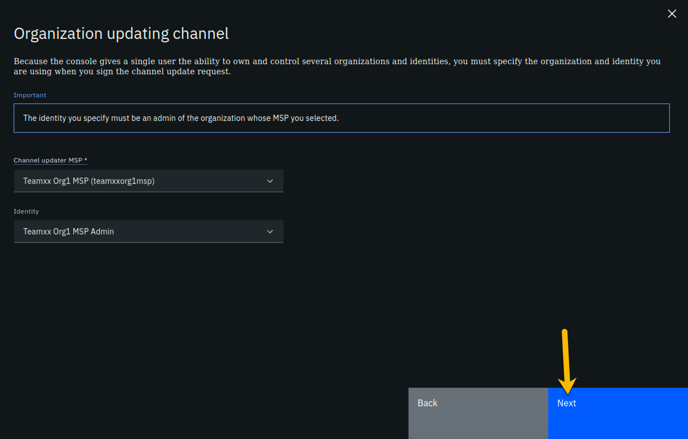
Step 19.5: On the Organizations panel, select Teamxx Org2 MSP (teamxxorg2msp) from the dropdown list for the Channel member field, and then click the Add button to the right of the field:

Step 19.6: Your teamxxorg2msp organization will now be listed under the Organizations section. Select the checkbox to the left of Operator in order to give this organization Operator authority on the channel. Click the Next button:
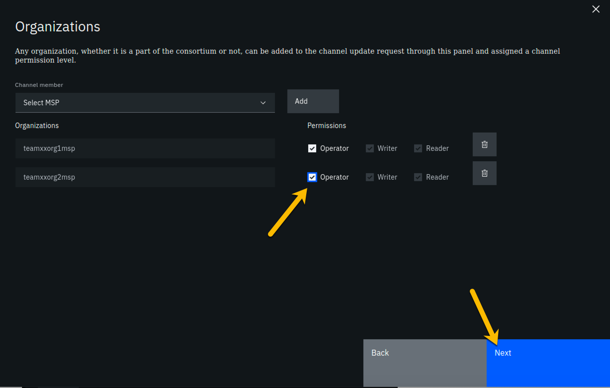
Step 19.7: On the Update policy panel, select 1 out of 2 for the Policy field and then click the Next button:

Step 19.8: From the Capabilities panel, click the Review channel information link, as you will not be updating any of the advanced configuration settings:
Step 19.9: Review the top half of the information in the Review channel information panel. The bottom half of information, below the horizontal line, is for advanced settings that you did not change. Ensure that the information in the top half, which you did enter, corresponds to the table below, with xx corresponding to your two-digit team ID:
| Left column (labels) | Right column (values your provided) |
|---|---|
| Channel name | teamxx-channel1 |
| Ordering service | Teamxx Ordering Service_1 |
| Organizations | teamxxorg1msp and teamxxorg2msp |
| Policy | 1 out of 2 |
| Organization updating channel | Teamxx Org1 MSP |
| Identity for organization updating channel | Teamxx Org1 MSP Admin |
Note
If you entered some values incorrectly, click the Back button as necessary to navigate back through the screen flow until you get to the screen(s) necessary to correct your mistakes, and then navigate forward again with the Next button until you return to this Review MSP information screen and verify you have entered the expected values. Ask an instructor for help if necessary.
When you have ensured that you have entered the right values, click the blue Update channel button in the lower right of your screen.

Step 19.10: Notice that the block height is now three. The most recent block, that has an ID of 2- block numbering starts at zero- contains a transaction that contains the configuration update you just made, which added your Teamxx* Org2* to the channel.
Note
Hyperledger Fabric distinguishes configuration update transactions from typical application transactions. The IBM Blockchain Platform console does not show details of configuration update transactions nor include them in the count of transactions that it will display. That is, if you display a block that has a configuration update transaction, the IBM Blockchain Platform console will show 0 transactions for that block. (A block of application transactions can contain multiple transactions, but a configuration update transaction is the only transaction in its block. That is, a block does not contain a mix of application transactions and configuration update transactions).
Click the Channel details tab, which is to the right of the Transaction overview tab:

Step 19.11: In the Channel members section of the panel, you should now see both of your peer organizations listed as members. Once you have verified this, click the Channels icon on the icon palette on the left:
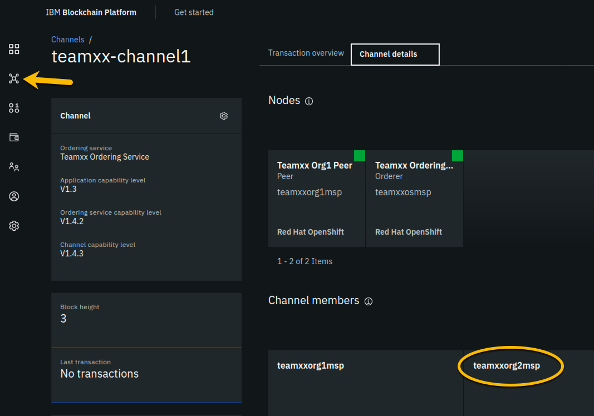
Note
Although teamxxorg2msp is listed in the Channel members section, you don't see it listed above that in the Nodes section. That is because you have not joined a peer from teamxxorg2msp to the channel yet. You will do that next.
Section 20: Join your Teamxx Org2 peer to the channel¶
You will now join Teamxx* Org2 Peer* to the channel:

Step 20.1: Now that your Org2 is a member of the channel, you can join your peer from Org2 to the channel. Click the blue Join channel button:
Step 20.2: Ensure that Teamxx Ordering Service, where xx is your two-digit team ID, is selected for the Ordering service field and click the blue Next button:

Step 20.3: Type teamxx-channel1, where xx is your two-digit team ID, in the Channel field and click the Next button:

Step 20.4: In the Choose from available peers section, select Teamxx Org2 Peer, where xx is your two-digit team ID, and then click the blue Join channel button:

Step 20.5: You are returned to the Channels screen. Click the tile for your channel, teamxx-channel1:
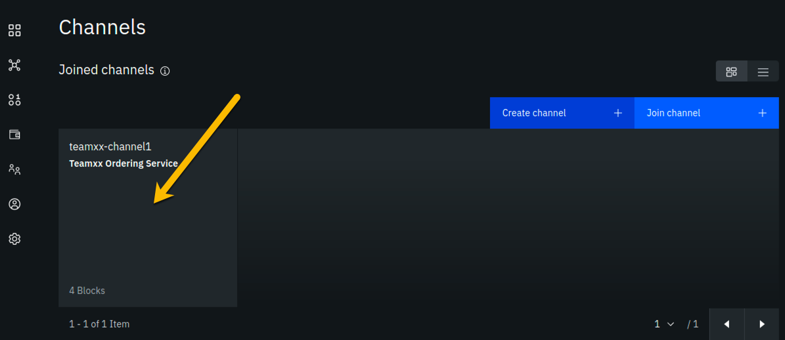
Step 20.6: Click the Channel details tab to the right of the Transaction overview tab:

Step 20.7: Observe that your peer node for Org2, Teamxx Org2 Peer, is listed in the Nodes section, indicating that this peer has joined the channel:

Congratulations!!
You have made it to the end of this lab! Job well done! But after all that work you haven't run any smart contracts on your new network yet! Don't worry, that occurs in the next lab. You will not have toiled in vain.